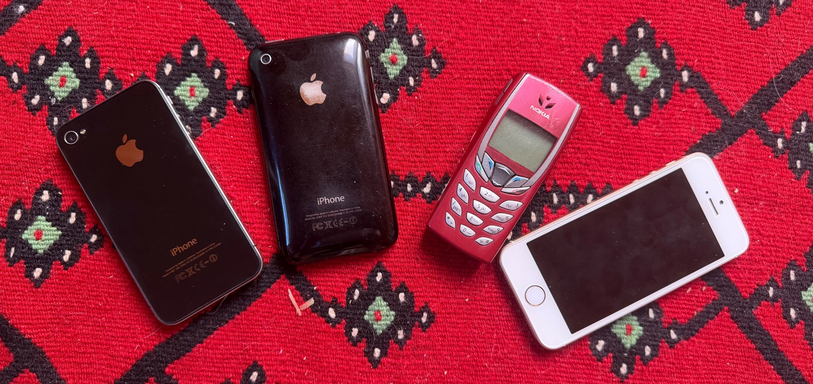

PHOTO // PHONE COLLECTION
TELEFONY // KOLEKCJA
Klasyczne Nokie i kolejne generacje iPhone'a — od ery prostych telefonów po współczesnego iPhone'a 17 Pro.
PAGE // 04
KOLEKCJA // TELEFONY
Mały przekrój historii telefonów, które trafiały do mojej kolekcji.
Nokia 6610
iPhone 3GS
iPhone 4S
iPhone SE 1 gen
iPhone SE 2 gen
iPhone 11 Pro
iPhone 13 mini
iPhone 17 Pro (GŁÓWNY)
04A
DLACZEGO TELEFONY?
Telefony są ciekawym uzupełnieniem kolekcji komputerów, bo w małej obudowie pokazują tę samą historię rozwoju technologii: coraz mocniejsze układy, lepsze ekrany, aparaty, pamięć i coraz bardziej rozbudowane systemy.